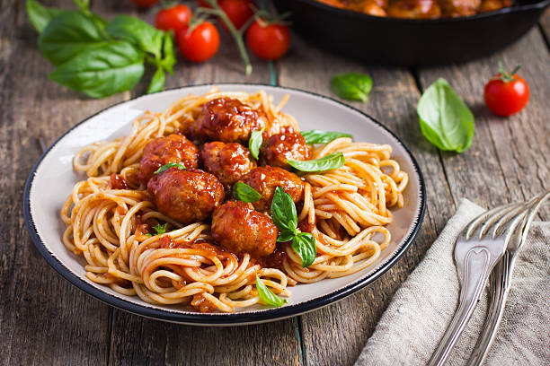

Back to home page
Fast and Friendly Meatballs

Description
These oven-baked meatballs are fast and easy to prepare and very kid-friendly. You can serve them with pasta and spaghetti sauce or just eat them with ketchup, as my children do. Feel free to substitute lean ground beef for the ground turkey. The turkey should have at least 7% fat.
Ingredients
- 2 tablespoons olive oil
- 1 (20 ounce) package ground turkey
- 1 egg, beaten
- ⅓ cup Italian seasoned bread crumbs
Directions
- Preheat the oven to 350 degrees F (175 degrees C). Grease a 9x13 inch baking dish with the olive oil, and place it in the oven while preheating.
- In a medium bowl, mix together the ground turkey, egg, and bread crumbs using your hands. Using an ice cream scoop if possible, form the meat into golf ball sized meatballs. Place about 1 inch apart in the hot baking dish. Press down to flatten the bottom just slightly.
- Bake for 15 minutes in the preheated oven, then turn them over, and continue baking for about 5 more minutes, or until somewhat crispy on the outside. Serve with pasta and sauce or however you'd like.